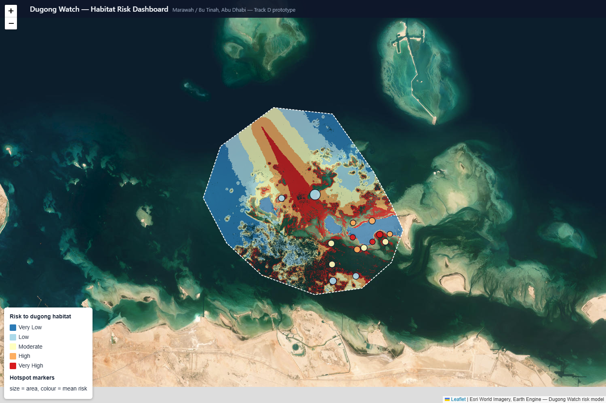

Dugong Watch — Habitat Risk Dashboard
Marawah / Bu Tinah, Abu Dhabi
Offline snapshot · works with no internet

Static snapshot of the live Earth Engine risk model · does not expire · for the interactive version run the dashboard with
python -m http.server